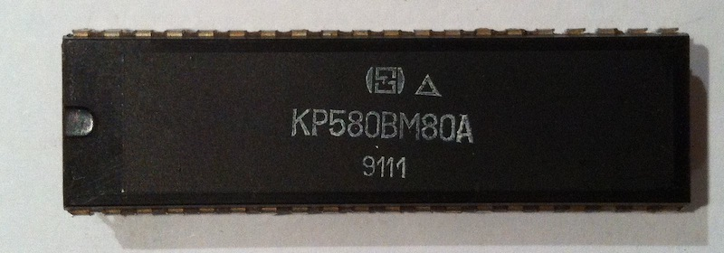
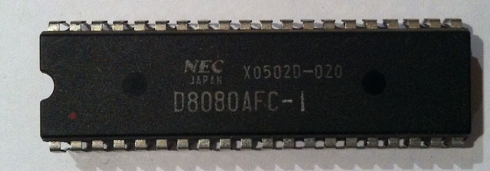
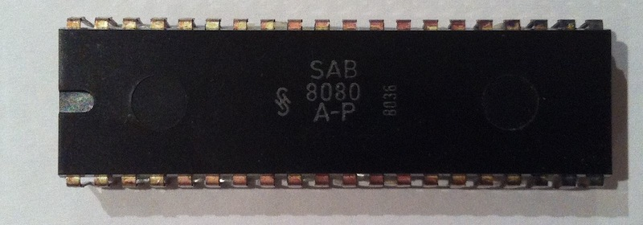

Моя коллекция микропроцессоров Intel 8080
Я начал программировать лет двадцать назад, и пришлось мне это делать прямо в машинных кодах Intel 8080. Этот эпохальный микропроцессор стал для билетом в мир создания программного обеспечения. Годы спустя, работая над эмуляторами i8080 и разбираясь с недокументированными или плохо документированными его особенностями, возникла идея собрать несколько экземпляров реальных i8080, желательно, от разных производителей, а не только Intel, и протестировать их в программе 8080 CPU Exerciser.
На данный момент я собрал 20 чипов (Intel, AMD, National Semiconductor, NEC, Samsung, Texas Instruments, и также в произведенных Советском Союзе и Чехословакии). Среди тех, что имеют даты выпуска на корпусе, самый старый 1974 года, а самый новый - 1980. Все чипы, за исключением одного, прекрасно работают. Тестировал я их в Радио-86РК.
Проверка показала, что все чипы, кроме произведенных AMD, совершенно одинаковы по показаниям 8080 CPU Exerciser. Кристаллы же AMD, AM8080 and AM9080A, имеют одно небольшое отличие в команде битовой операции AND (инструкции ANA и ANI). Следуя оригинальному поведению процессоров i8080 от Intel, флаг дополнительного переноса AC должен вычисляться как третий (A3) бит результата операции OR между аккумулятором и аргументом команд ANA или ANI. Процессоры же AMD просто обнуляют флаг AC в инструкциях ANA и ANI. Сложно представить, почему Intel придумал столь странную логику для флага AC в операциях AND (в других битовых операциях флаг AC просто обнуляется аналогично логике от AMD).
Итак, моя коллекция
Двойным кликом можно переключать верх и низ чипов.
AMD
Интересно, что изначально AMD начала производить клоны i8080, используя, дословно, украденные у Intel чертежи. Так что война Intel vs AMD началась именно тогда.
8080A, 1977

AM9080, 1977


National Semiconductor
INS8080AN

Этот чип, увы, не работает.
INS8080AN


Intel
1974

1977

1979

1980

Россия
КР580ИК80A

КР580ВМ80A
Родной вкладыш, с которым продавался ВМ80: страница 1 и страница 2.
{kind=link}
{kind=link}



NEC


Samsung

Telsa (Чехословакия)

Texas Instruments

ВСЕ! (пока).
А вот как я все это фотографировал при помощи айфона и двух Raspberry Pi’ев.

P.S.
Хочу надеяться, что коллекция будет расти. Увы, пока я у меня только один чип в белой керамике. И если вы знаете о существовании еще каких-то клонов i8080 от еще каких-то фирм, буду признателен за информацию.
Также с удовольствием приму в подарок любой i8080 (даже не обязательно рабочий) и могу поставить ссылку на подарившего.
Disclaimer